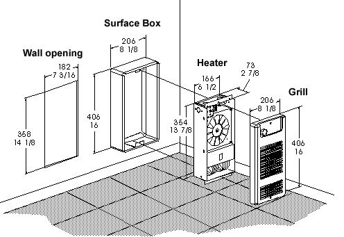
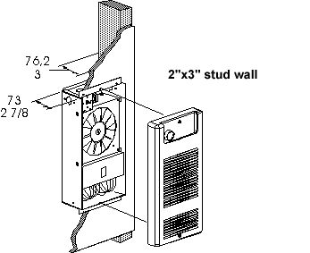

BN Thermic Instruction Sheet
WHE Fan Forced Wall Insert Heaters
INSTALLATION AND OPERATING INSTRUCTIONS
PACKAGING- Unpack the heater and remove all packaging material.
LOCATION- The WHE heater is intended for the space heating of small areas that require the additional robustness and air movement this heater is designed to provide. DO NOT COVER THE HEATER or restrict the airflow in any way as this can cause overheating.
POSITIONING- The heater is intended to be vertically or horizontally wall mounted only. Either surface mounted, using the WHESB or recessed. Do not obstruct the front of the heater for at least 1200mm. Optimum mounting height is 1m from the floor. For recess mounting provide an opening in the wall 182x358x80mm.
INSTALLATION- For surface mounting fix the mounting box to the wall securely. Remove the two screws securing the front cover and locate the incoming wiring to suit the terminal connection point on the heater. Where the wiring passes through the recess box use a knockout suitably bushed. For surface mount using four screws fit the recess box into the surface box. For recess mount, using four screws securely fit the recess box to the wall.
 CONNECTIONS - Connection to the mains should be made by way of a suitable switch, plug or other device in accordance with the current regulations and protected by an appropriate fuse or circuit breaker. Connect the heater using the live cable, usually red or brown to the terminal marked L, the neutral cable usually black or blue to the terminal marked N and the earth wire usually green or green/yellow to the terminal marked E and having the symbol  . THIS UNIT MUST BE EARTHED.
. THIS UNIT MUST BE EARTHED.
CONTROLS- The WHE is available with and without an integral thermostat. If a thermostat (WHE-TB) is fitted it can be made tamperproof by leaving the knob off and inserting the metal hole closer. Adjustment is effected by using a screwdriver on the slotted thermostat shaft (after prying out the closer). In either case set as follows:- Turn the knob fully clockwise (maximum temperature). As the area warms up to the desired temperature rotate the knob anti clockwise until a 'click' is heard. The heater should now maintain that temperature setting. The heater is fitted with an automatic reset overheat cut out.
GENERAL MAINTENANCE ON ELECTRIC HEATERS
BN Thermic Electric Heaters are factory assembled and tested and are non user serviceable.
They are designed to operate for many years, problem free.
All moving parts are factory lubricated and should require no service.
Maintenance is limited to the keeping of both inlet and exhaust areas free from any accumulation of dust and other foreign materials. This is especially important immediately before a heating season. Any dust build-up can be loosened with a brush and a vacuum cleaner applied to the airways to ensure complete removal of dust materials. An unusual odour may be noted on the initial turn-on period as any dust particles may have been disturbed and will be burnt off from the element.
If you are in any doubt contact your electrician for advice.
Warranty. Your BN Thermic product is guaranteed for one year from date of purchase. We will repair or replace at our discretion any part found to be defective. We cannot assume any consequential liability. This guarantee in no way prejudices your rights under common law and is offered as an addition to consumer liability rights.